Electrical Engineering @ UWaterloo
Open to Jan–Apr 2027 co-op
Hello,
I'm Lucas Wu!
Wrote the functional-unit control RTL for a ray-tracing ASIC with UWASIC, Waterloo's chip design team.
01 — Projects
My projects.


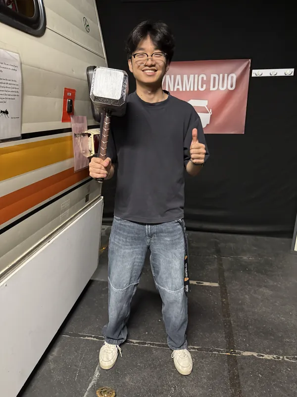
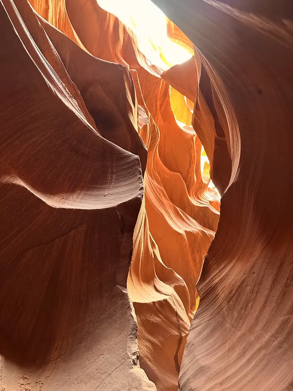
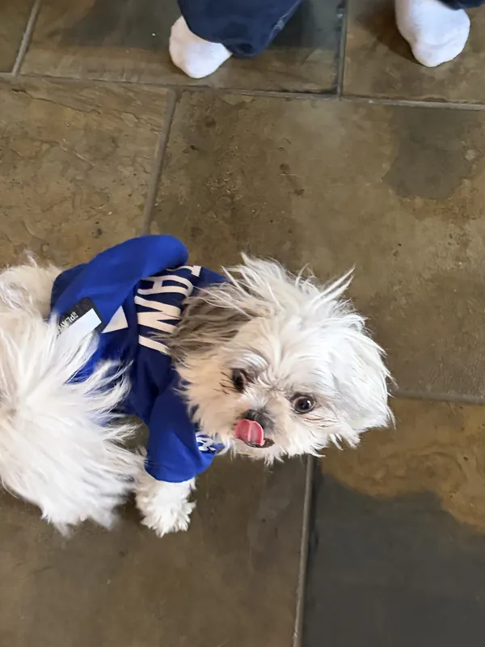
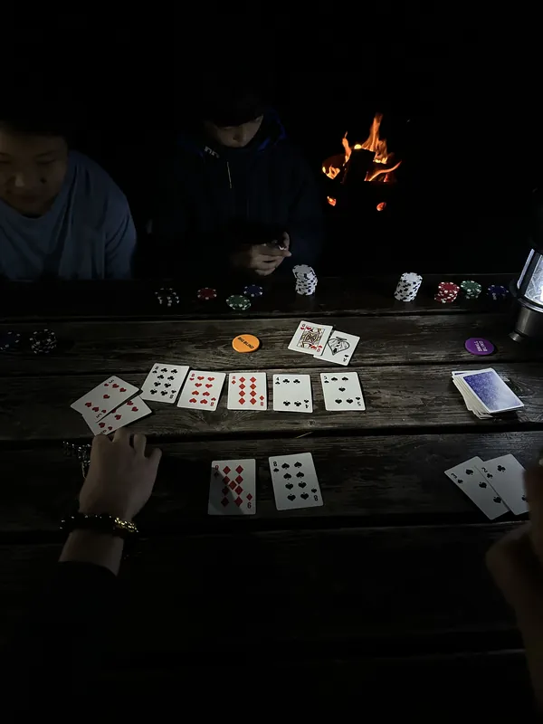
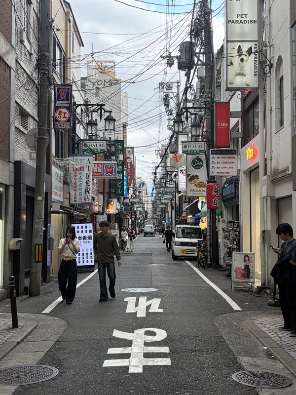
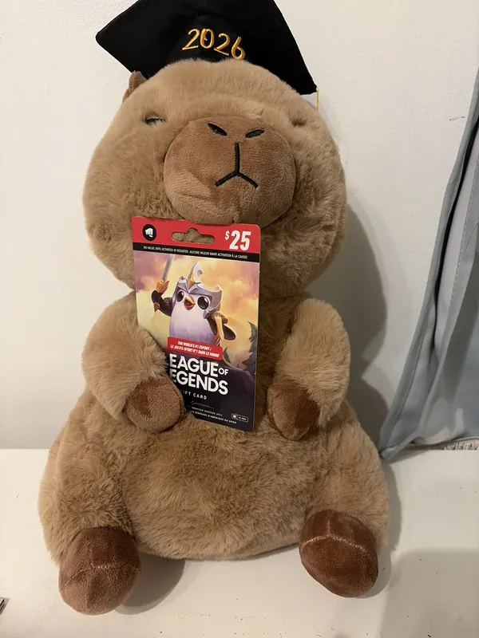
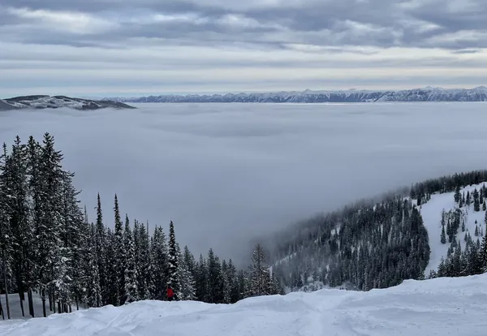
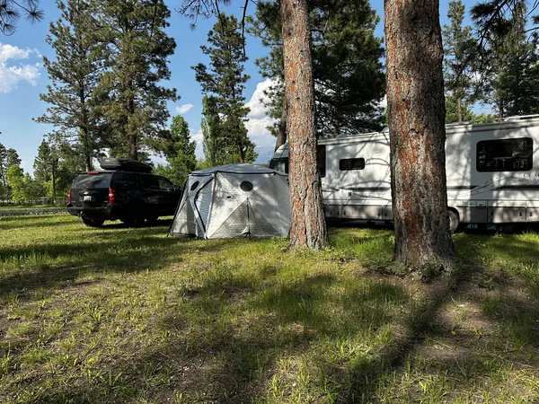
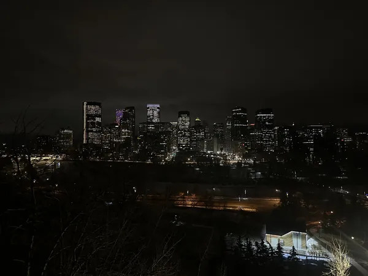
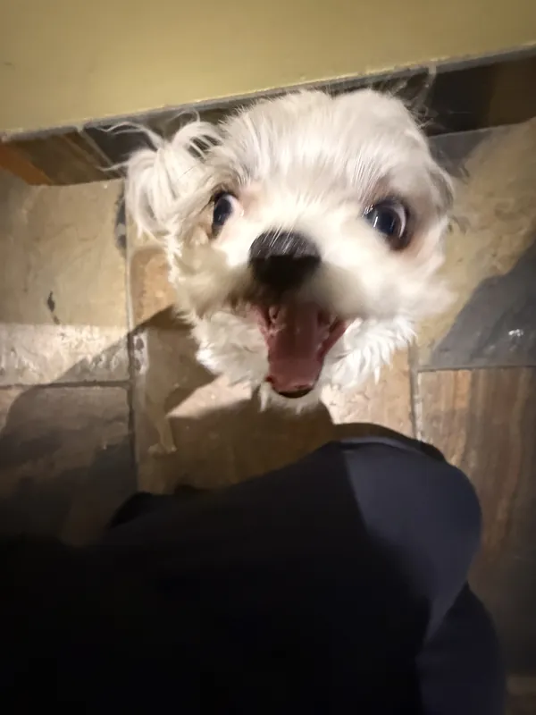
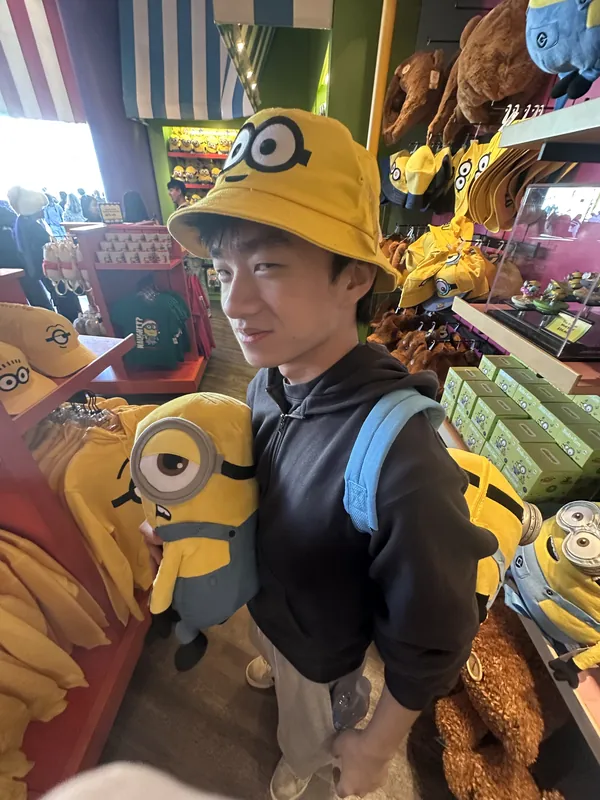
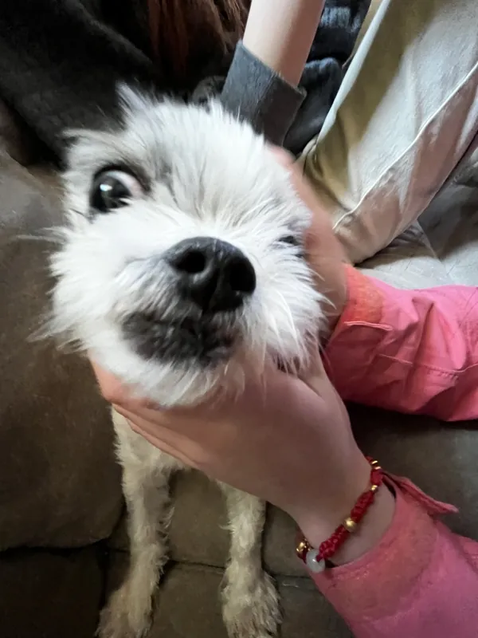
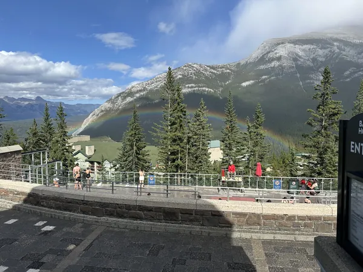
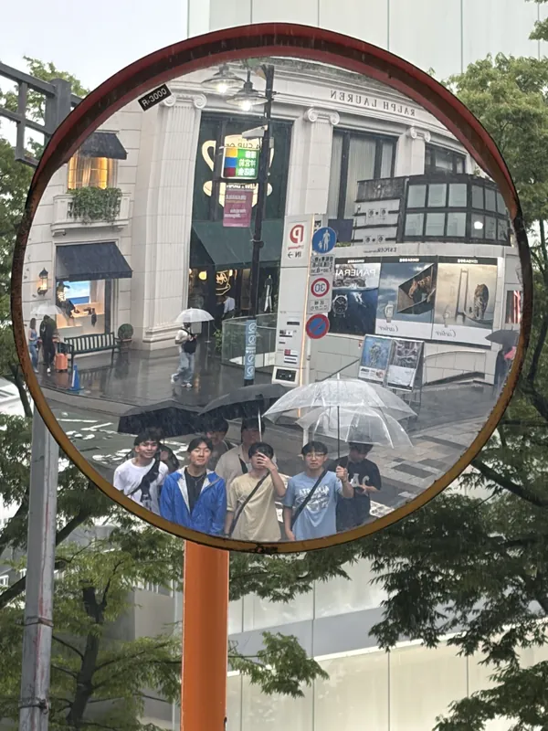
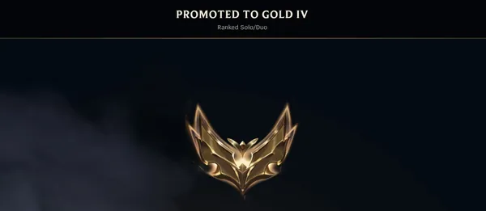
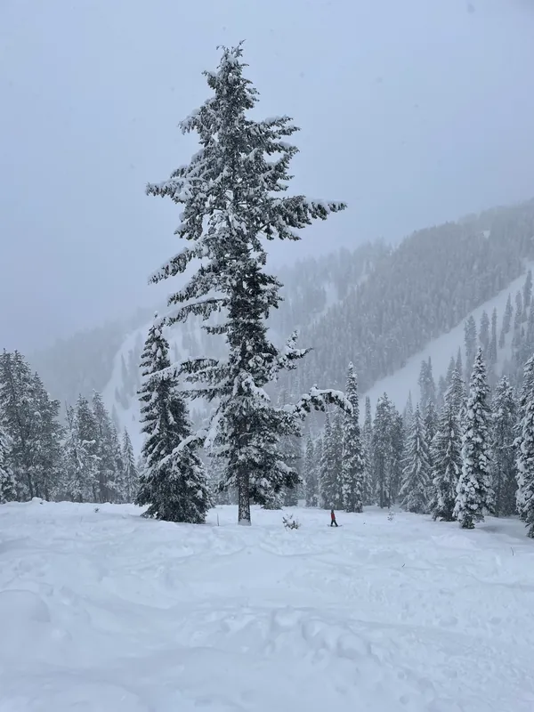
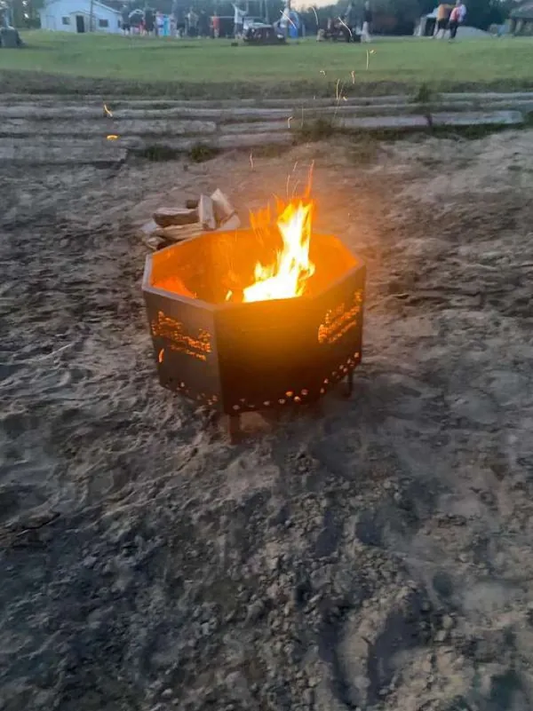
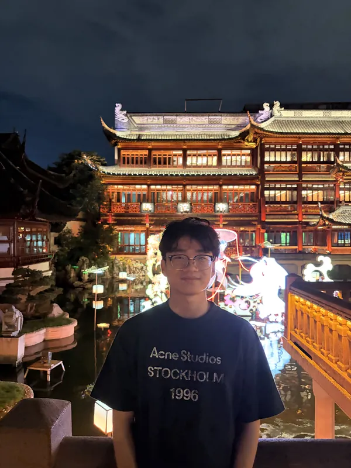
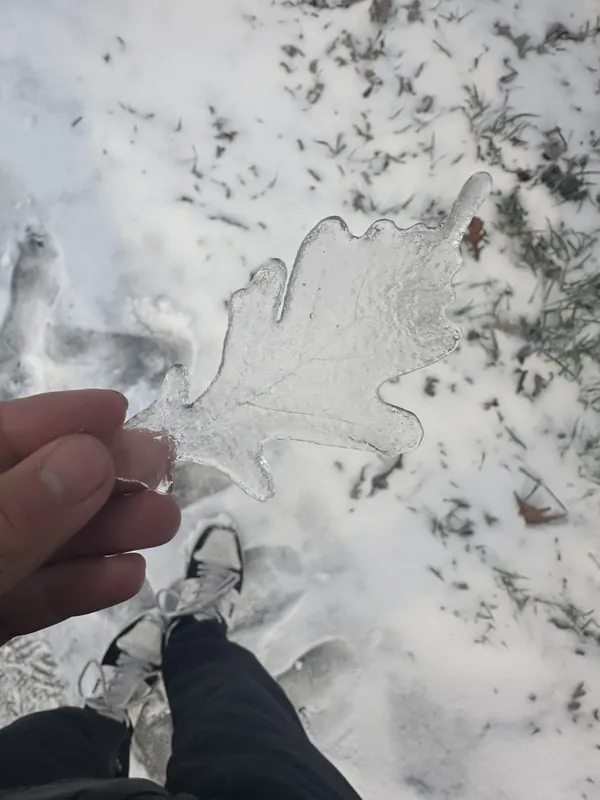
02 — About me
Who am I?
I'm Lucas. I grew up in Calgary, and I'm now studying Electrical Engineering at the University of Waterloo.
I got into building things through VEX robotics in high school, rebuilding intakes and flywheels. Since then, I've taught myself computer graphics by writing a ray tracer, and now I'm designing a ray-tracing chip with UWASIC.
Outside of school, I've played hockey for almost as long as I can remember. In the winter I ski, in the summer I camp and hike, and whenever I can, I travel with my family. At home, I'm usually hanging out with my dog, Oreo, or playing League with friends. I did finally hit Gold!
03 — Contact
Contact me.
I'm looking for a Jan–Apr 2027 co-op. The fastest way to reach me is email.
- Email: lucaswu2018@gmail.com
- GitHub: github.com/lucaswuan
- LinkedIn: linkedin.com/in/lucaswuan
- Résumé: Lucas-Wu-Résumé.pdf